31th August to 5th September 2024
A quick island hop later with Hawaiian Air and I arrived on Oahu island. According to a tour guide I spoke with Oahu's slightly curved mountain range is an ancient section of a huge volcano. The rest plenty of years in the past fell apart and into the ocean, leaving behind Oahu. On my first full day I spent my time getting my whereabouts around Honolulu. The traditional government buildings (the building below and the palace, situation right over the road) sit just east of downtown Honolulu. This is King Kamehameha, an early and crucial ruler to the Hawaiian islands. He was the first to band the islands together into 1 identity.
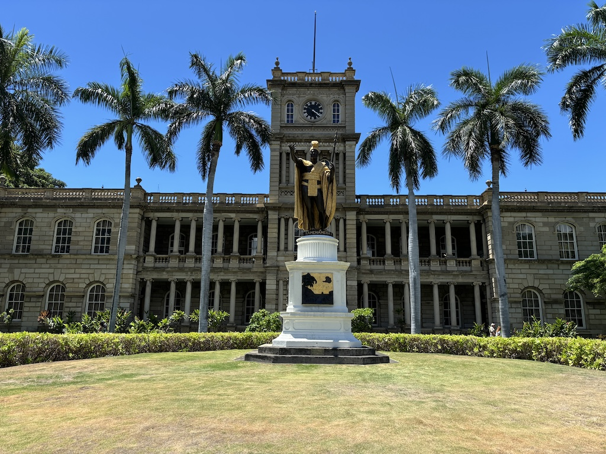Heading into downtown is this sign above a fresh foods market in Chinatown. Originally the building was a burlesk house and upon request of the previous owner the neon sign was permitted to stay up. Although I didn't personally see this it apparently lights up at night.
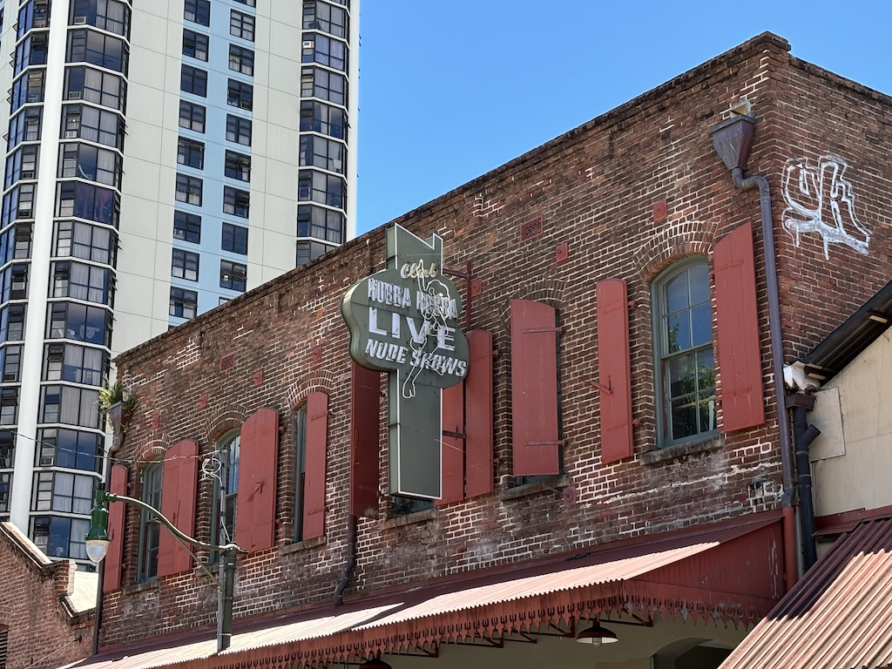After walking through downtown Honolulu I looped around to the Punchbowl - a small circular valley situated at the top of a nearby hill. The space has been donated to the government to be used as a graveyard for those lost in conflict in the Pacific. At a couple of points along the ring road inside the gate below are collections of walls listing names of the fallen or lost. Guests can even bring flowers and fix them to the placard of their lost one using complementary perfect-fitting cones.
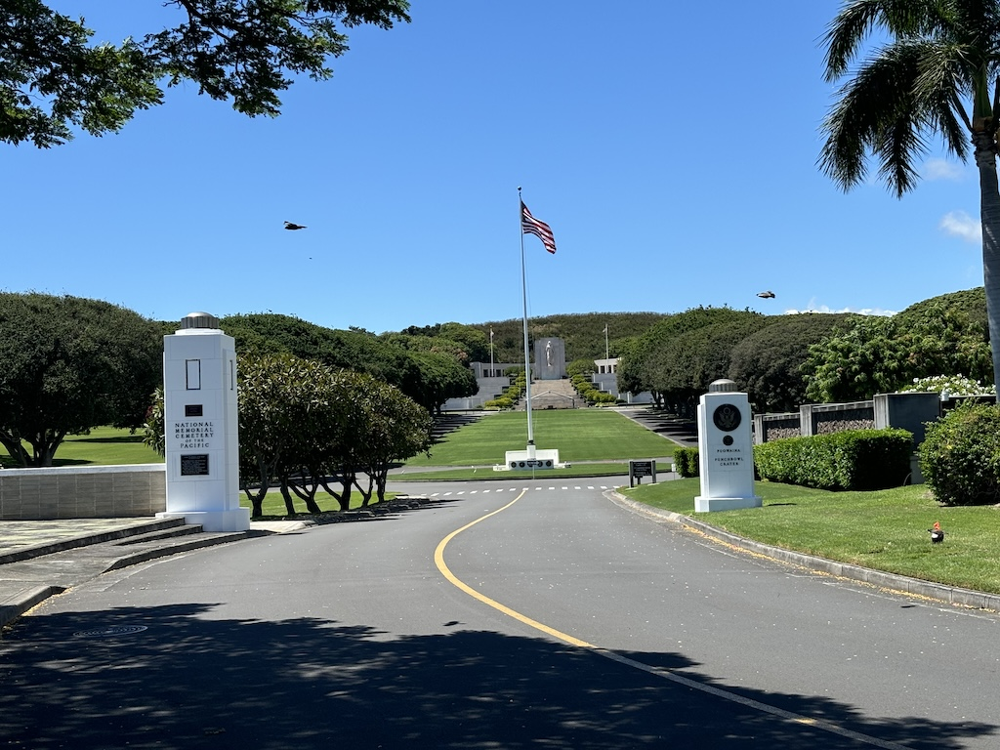At the far end of the park space is the main memorial to all those lost. A large statue and a small water fountain towers above you as you walk up to the monument. Inside the semi circle walkway was maps and information on each of the islands in the Pacific and how conflict during the second world war occurred there.
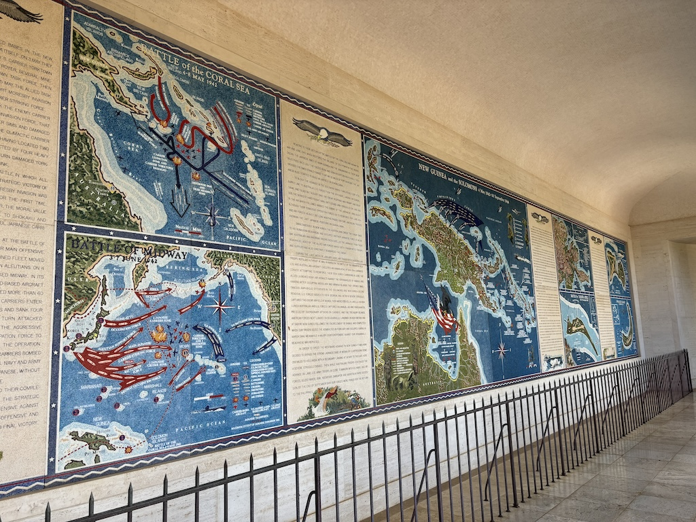I was very impressed with the amount of detail that went into these diagrams. They were mosaics, so perfectly made it was hard to tell they were made of tiles until you looked right up close to them. The text was glued on afterwards but excluding that everything is masterfully detailed in tiny pieces of tile and glass.
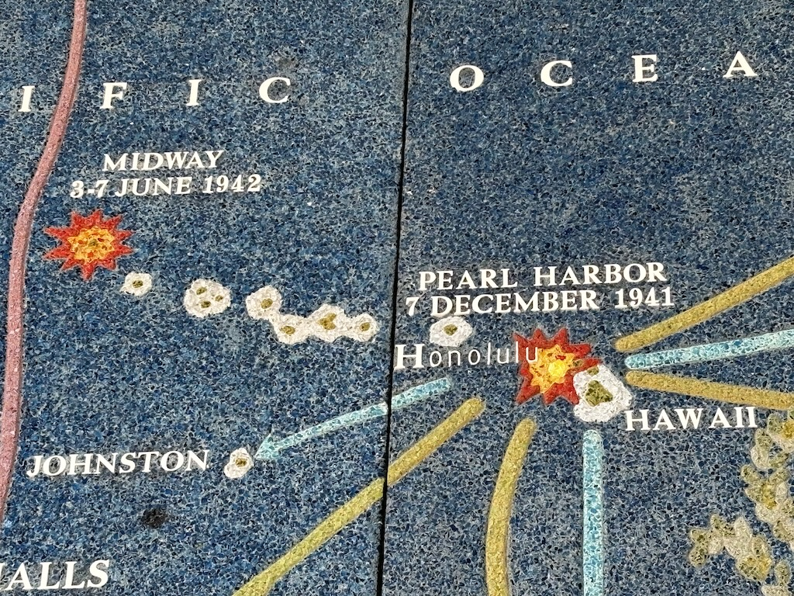After reading up about the war and enjoying the view from the viewpoint here I walked back to town. I was confused at first when I saw this piece of art thinking they were English olympians, wondering why Honolulu would have art up of someone we sent to the olympics. After realising they're both wearing the same flag and that the Hawaiian flag has the union jack in the corner of it the whole thing made more sense.
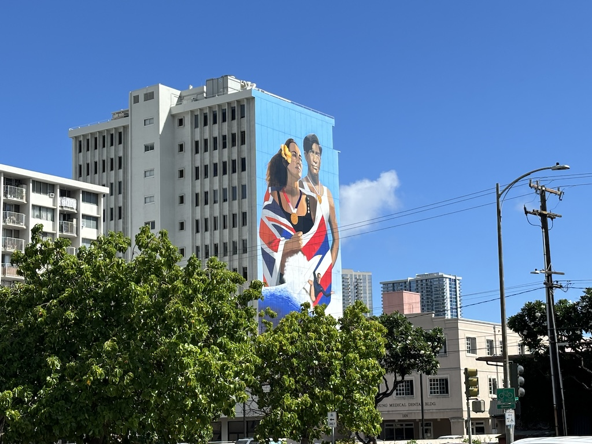The next day I visited Pearl Harbour. Surprisingly the buses don't take card payments, requiring either cash (only dollars or coins) or a dedicated card called the holo pass. 2 dollars was pretty cheap for a bus ride but needing to take a small amount of cash out and then turn it into dollar bills was a bit of a pain. The 20 bus drops you off right outside the visitors center which does not allow bags of any kind inside. Bag storage is about $7 after tax and considering I was only storing a small bag that holds a wallet, battery pack and some cables I was quite annoyed at this. In hindsight I could have fit everything in my pockets and walked in which would be my advice to anyone else visiting.
Half of the exhibits are free and the others are about $15 each to enter. This included a walkthrough this submarine which I skipped due to the cost. It looked pretty cool from the outside though.
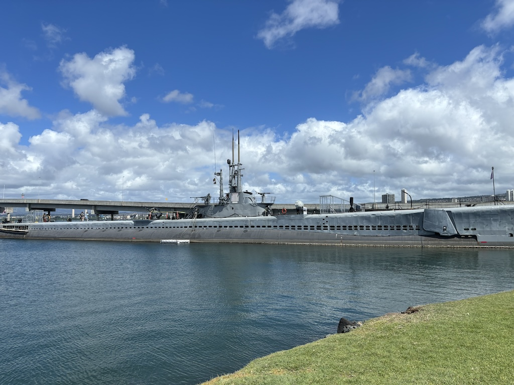There was a large museum section on the attack on Pearl Harbour during the second World War. Artifacts from the attacks and a detailed film displaying the conciseness of the strike from the Japanese was all very interesting. The attack was designed to knock America's naval threat out before they'd even joined the war, allowing Japan to take control of further afield Pacific islands. The strike on the 7th December 1941 was fairly effective with a tragically high number of casualties and a number of ships sunk. This is partially due to new developments in technology by the Japanese such as torpedos that can be fired in 20 foot deep water. Many of the ships moored up in the harbour were falsely considered safe from this sort of attack. Below is a real torpedo developed by the Japanese recovered from a downed plane. They're not small.
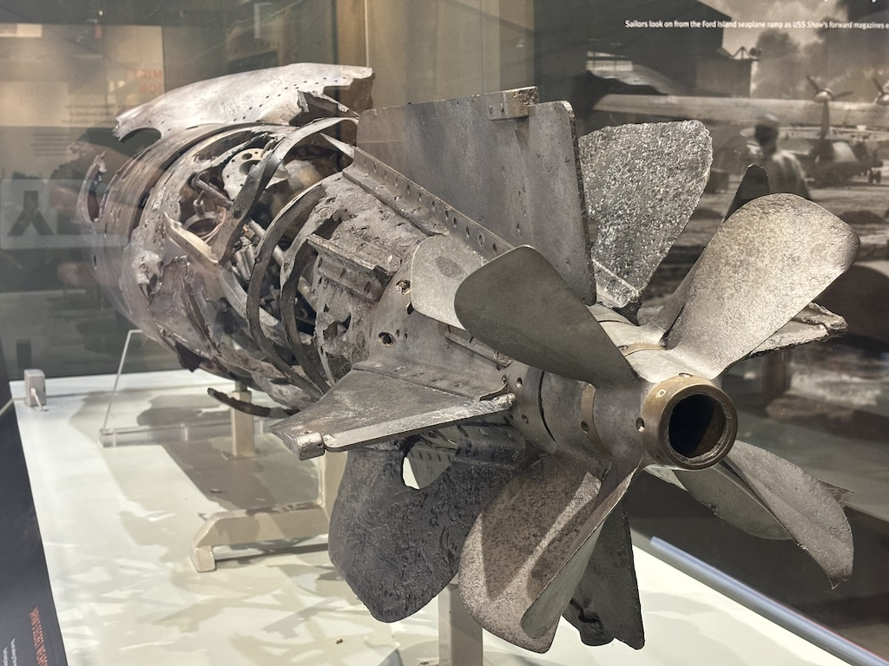I did not have a timed reservation for visiting the site of the USS Arizona, however luckily there was plentiful space on the boat when I tried to ride it. This memorial is a quiet and respected space for the men that were lost on this ship during the attack. Out of the entire fleet of ships in the bay, USS Arizona was the only one damaged to unrecoverable levels. It rests on the bottom of the shallow water here with this short walkway suspended overtop.
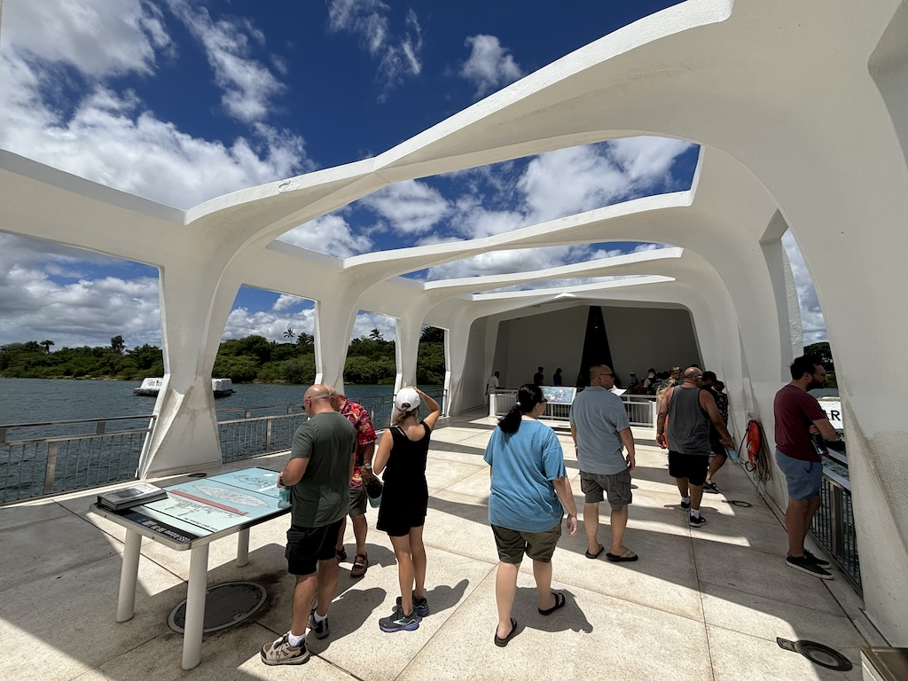Excluding the 334 or so men that survived the attack, 1177 dies within hours of the ship being hit. Their names are listed at the end of the walkway. A second list of names is written to the bottom right of the main list on a new piece of stone. These are men who survived the attack but have since died, requesting their ashes are returned to the ship to join their fallen men. As of the 23rd of April this year the last survivor of the USS Arizona passed away and joined the crew; there are no more living crew from the ship.
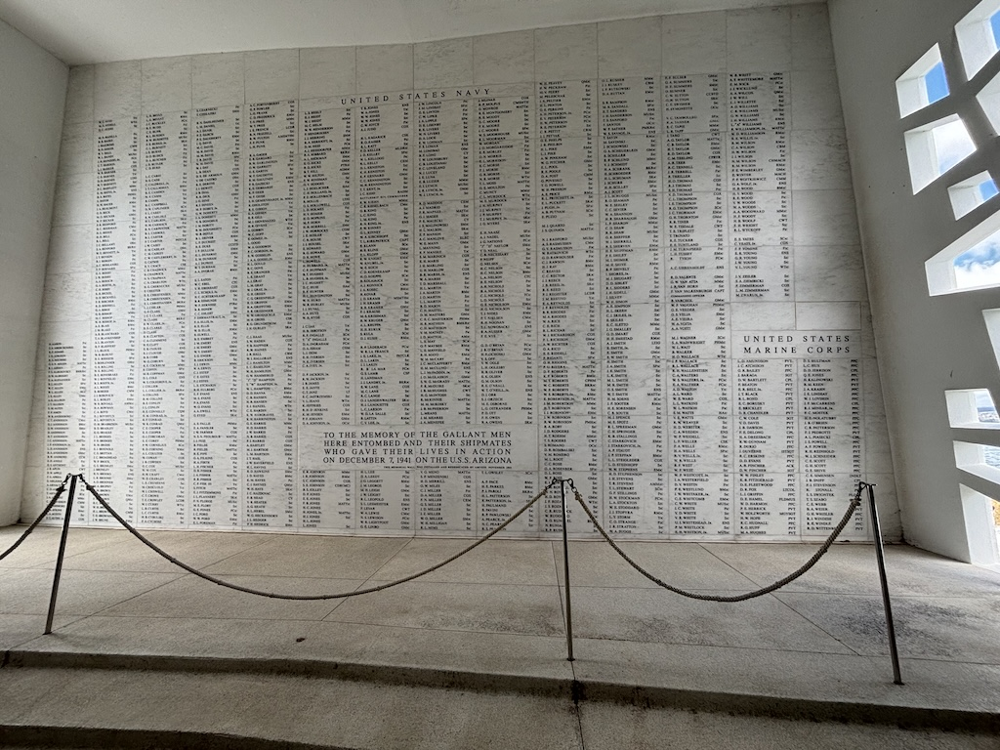The smell of oil was just slightly in the air. This is due to the ship sinking with a full undamaged tank of oil that is very slowly leaking. More than 70 years since and the tank has still not fully drained. Large white mooring markers make clear the boundaries within where the ship lies. These exist for a few other ships that were struck and sunk here too.
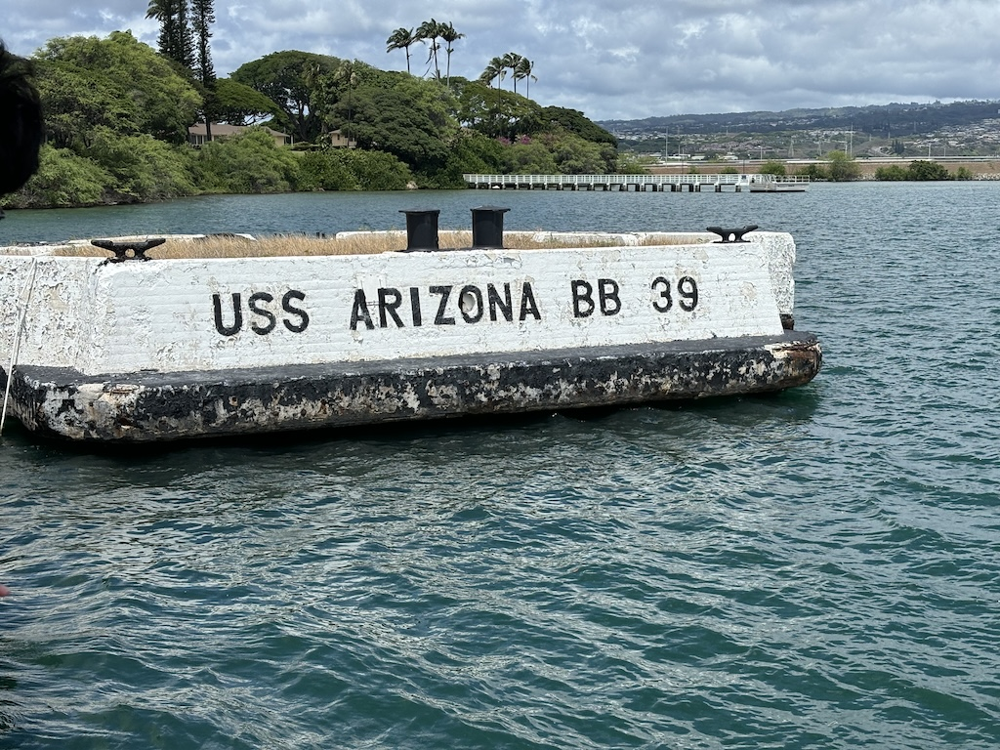If the markers weren't clear enough that there was a ship sunken here, the top of gun turret 3 distinctly above the water makes it very clear. The partially rusted and un-submerged pieces of the ship makes the whole experience a lot more real; It's stated that bodies of sailors trapped in the ship are still down there, completely unremovable.
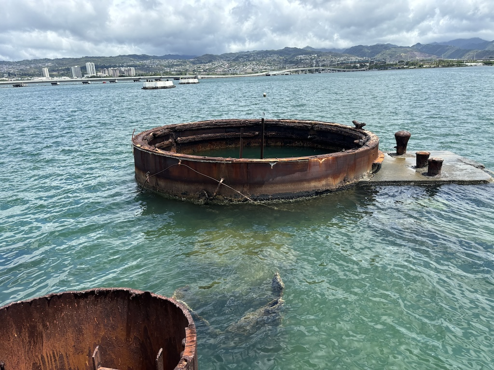On the way back to the hotel that evening I walked past a large group on strike. For the rest of my time on the island I would bump into this strike movement multiple times, holding rallies on multiple corners in Waikiki at once. After taking a pamphlet from one of the members I learnt they were striking over hotel working conditions and job availability. They state "hotel staffing per occupied room is down 13% nationwide since 2019 and down 32% since 1995".
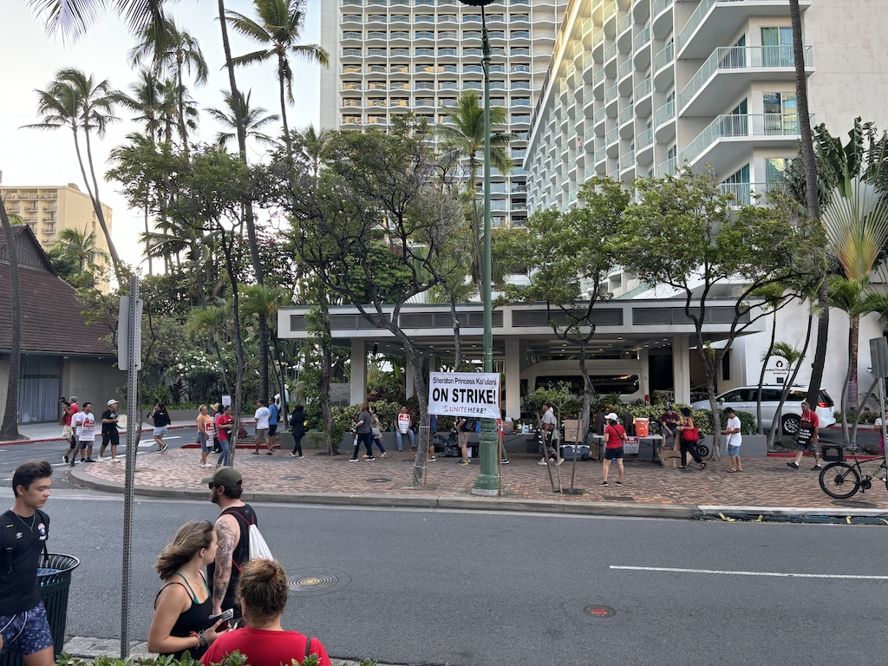On my penultimate day on Oahu I booked a wonderlust tour through the hostel I stayed at (thanks ALOH hostels for 50% off!). Mike our driver took a mini-bus of us around a few key sights to explore. First stop was the Manoa Falls trail. It was a short hike, between 1 and 2 miles from the car park to the base of the falls. It was very busy with lots of other people hiking the trail but luckily it was free.
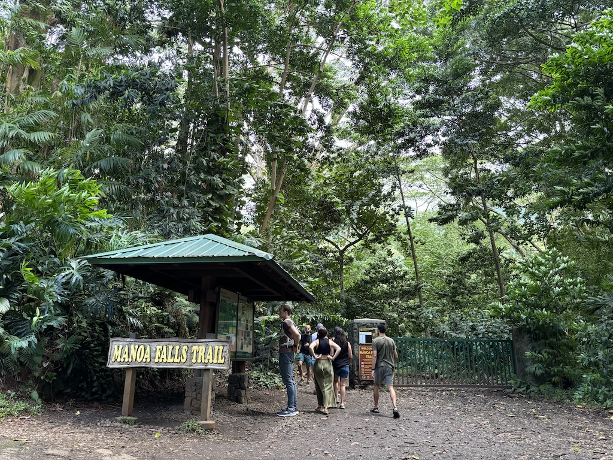At the end of the trail is the falls themselves, a beautiful long waterfall landing in a small pool. By this point I'd gotten to know a few others on the tour, including a Scottish lady living in Melbourne Austraila. She had a great story hiking Machu Picchu with her 67 year old Dad a few years back who was adamant at making it to the village.
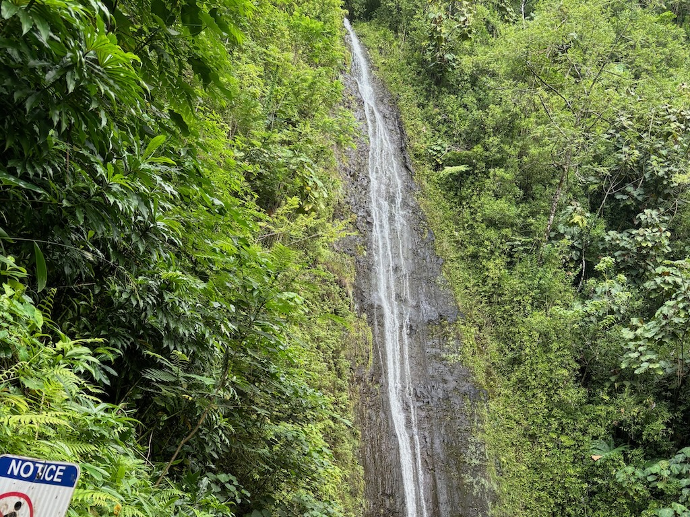After we all regrouped at the van we headed through the ridge to the other side of the island. On the way we stopped on the side of the highway where the great viewpoint of Waikiki and Diamond Head point. In the bottom left of the image below is the campus for the University of Hawaii. Oahu hosts over 1 million residents, made clear from this viewpoint.
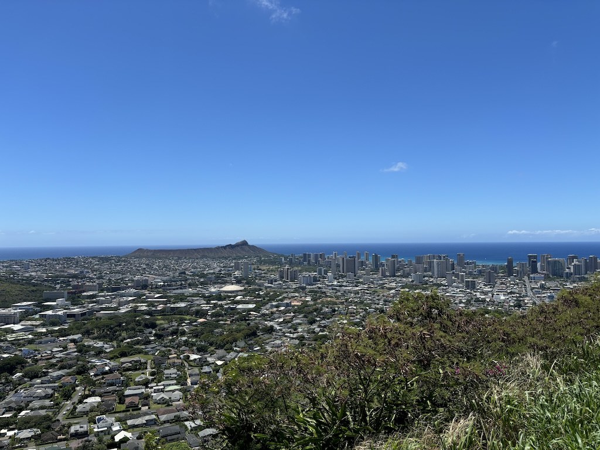Through the mountain ridge and we arrive at a huge botanical gardens. We were given 2 hours here to wander around and see as much as we could, although Mike was right you could spend all day here. Despite the gardens being oriented around the plants being grown the most impressive part of the space was the lake in the middle, home to 100s of fish. I guess they're used to being fed, because they were all heavily concentrated against the banks of the lake where the footpath ran near. Although this behaviour was probably quite unnatural I did find it fascinating to see a huge collection of bright orange fish all in one place.
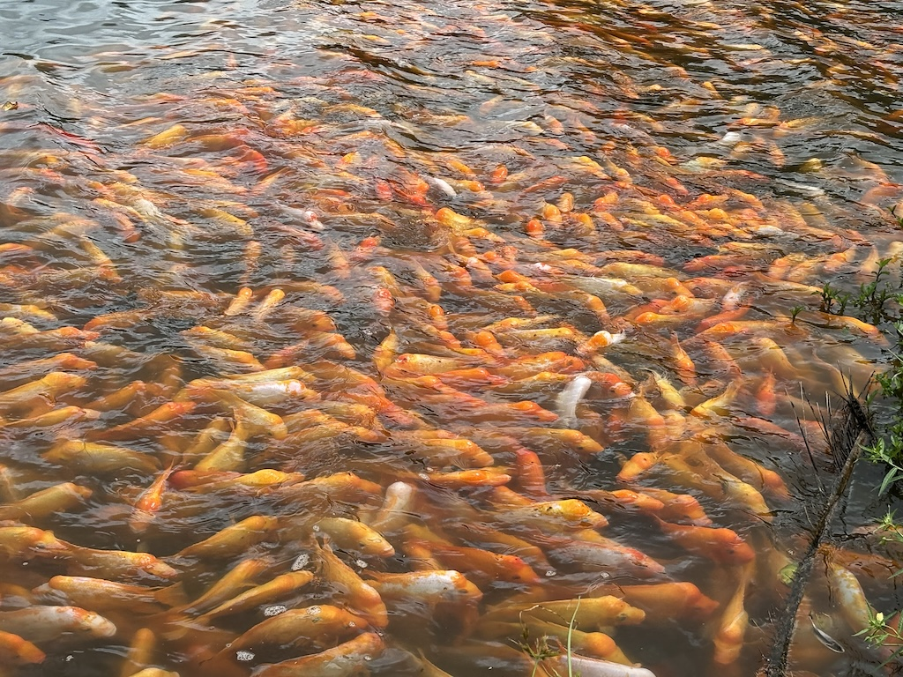After the gardens we quickly stopped at a famous shaved ice and donut place. I got the hawaiian shaved ice which came with macadamia nut ice cream (as mentioned in the last post, macadamia nut is the hot crop on the islands right now) and mango, coconut and passion-fruit flavourings. It did taste very good and had the interesting consistency of snow when in the spoon that became liquid the moment it hit your tongue. Ululani's was the name of the place and based on others in our group comparing it to their tourist-trap style shaved ices they'd bought by the beach, it's probably worth the journey.
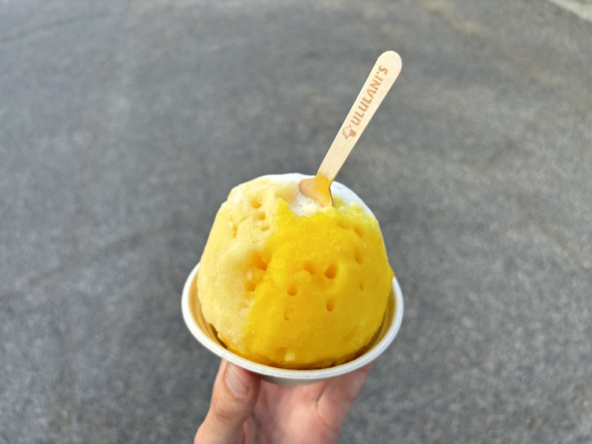I also had 2 donuts from Leonards Bakery, a Portugese donut shop. They looked like English supermarket sandwich rolls, except darker and had the taste and texture of a donut. The flavours are very strong and I'd recommend the Cinnamon if you're a fan. Made fresh every order and very tasty.
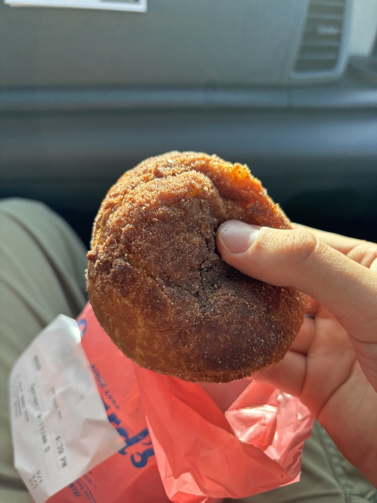I considered booking another one of these tours for the last day too but by the time I tried to do so the availability had gone. So instead I took a piece of tour guide Mike's advice and took a bus to his favourite hike on Oahu - the Olomana 3 peaks trail. 5 minutes in from the road I stumbled upon this spooky looking rundown house.
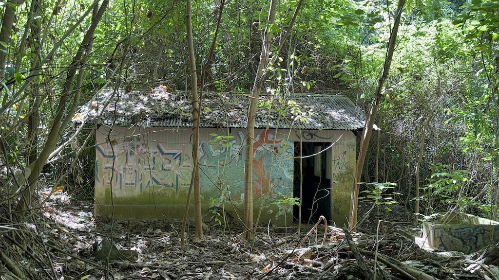Luckily no one was inside. Seems like it was some sort of power station or transformer. I may be very wrong there but with 4 or 5 large switch-boxes on the left hand side wall that would be my guess. If not, maybe a water pump for an ancient river that no longer flows here? It's a mystery to me.
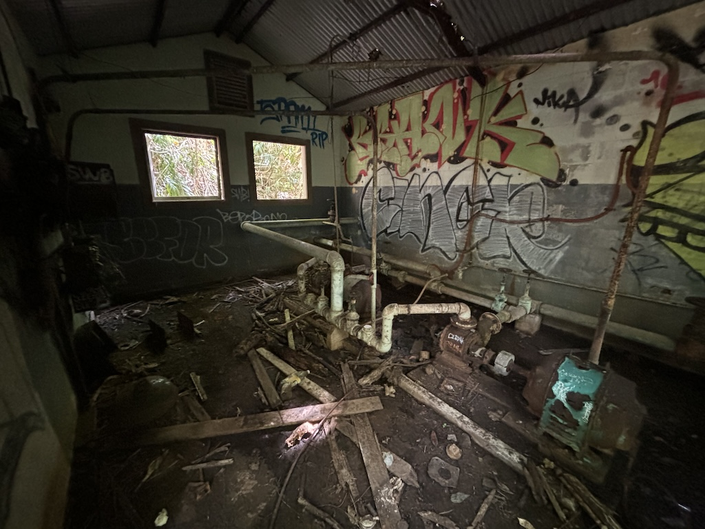Overall this hike took me about 2:30:00 to complete - both up and down. Part of this was just the heat and my keenness to take it slow. But I should definitely highlight why this hike has a bit of a deadly reputation. Near the top of the peaks the path disappears and hikers need to scramble over rocks. There are ropes to help at the tricky parts but it's not a walk for the faint hearted.
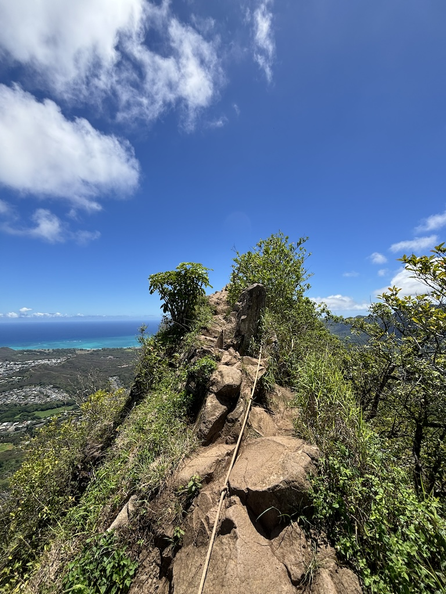However the view is totally worth the risk. Behind me was the golf course this hike is technically inside of. The ridge formed by the ancient volcanic eruption mentioned earlier can also be clearly seen.
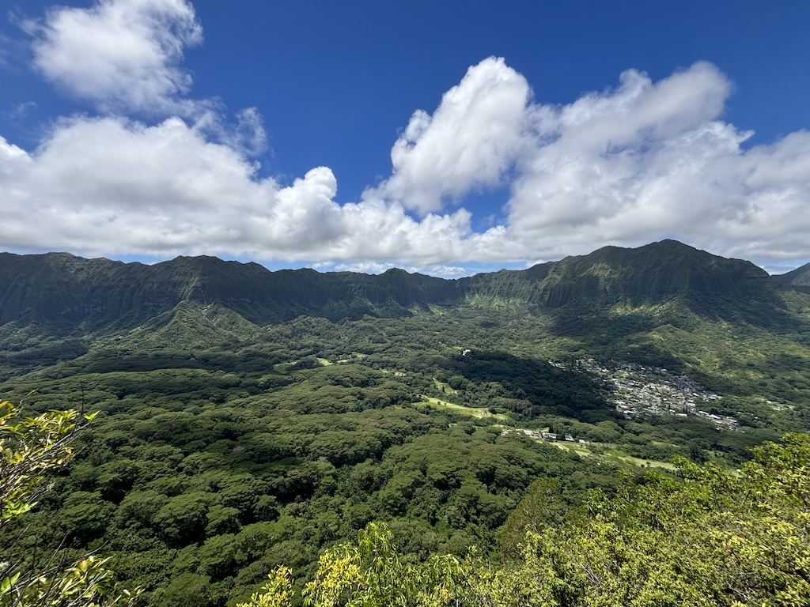And in front of me was the best view of all. The flats of the island's north side stretches to a continual white and blue beach. The belt road disappears on the far right side around the headland, looping south to Diamondhead and then back west into Honolulu. It was a cloudless view with perfectly weather; plenty warm with a gentle breeze. I abandoned doing the other 2 peaks and just sat here for 45 minutes.
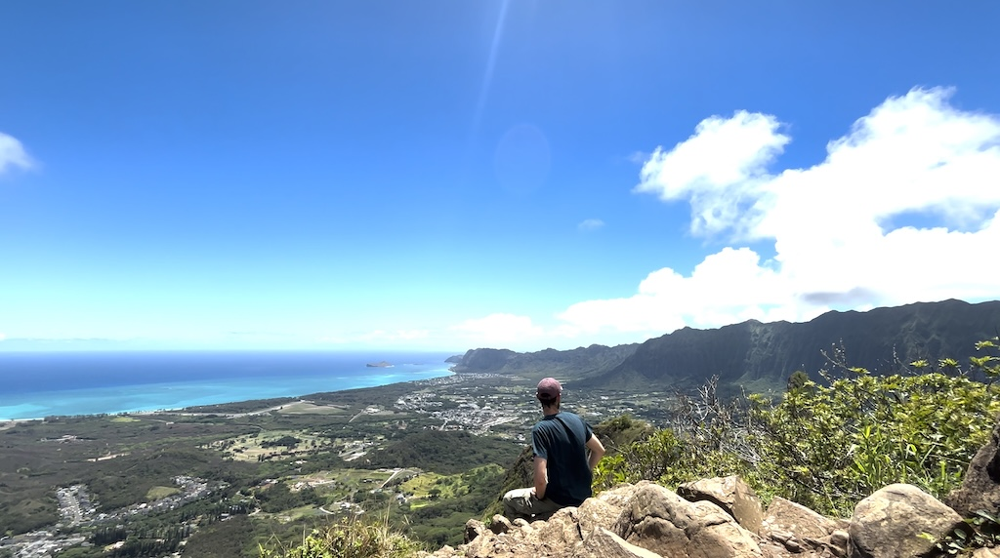And that was my last day. I also went down to the beach to relax that evening, watching the last sunset I'd see here. I have no photos of this as I left my phone in the hostel that evening. In Honolulu airport this morning I discovered it to be the first airport I've been to with a zen garden. Actually, scratch that, it's the first I've seen with a garden of any kind. Watching the sunrise here was beautiful and trying to remember it was an airport was really tough.
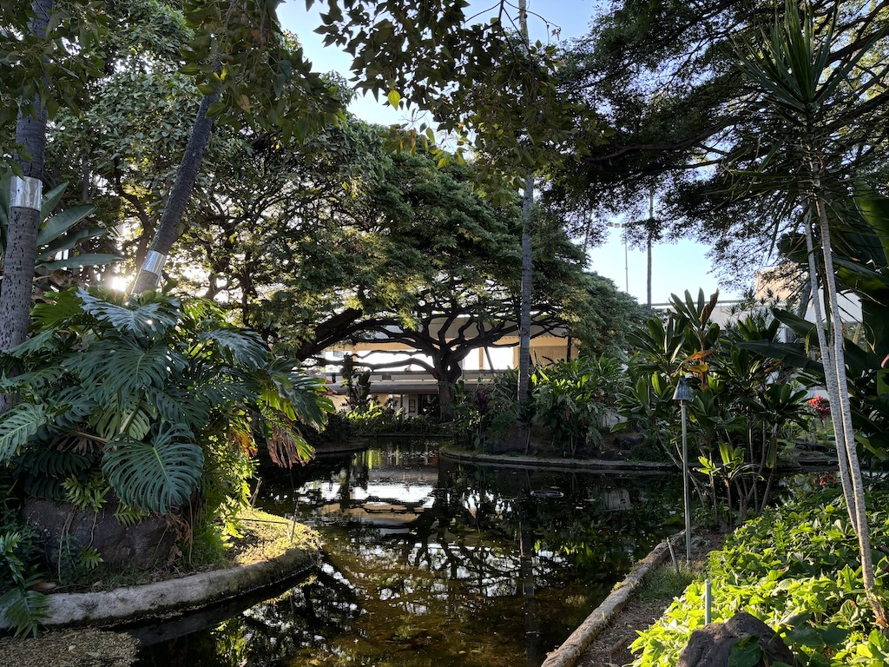With all that covered we arrive at where I am writing to you now, sitting on a plane flying yet further west watching the Pacific go by.
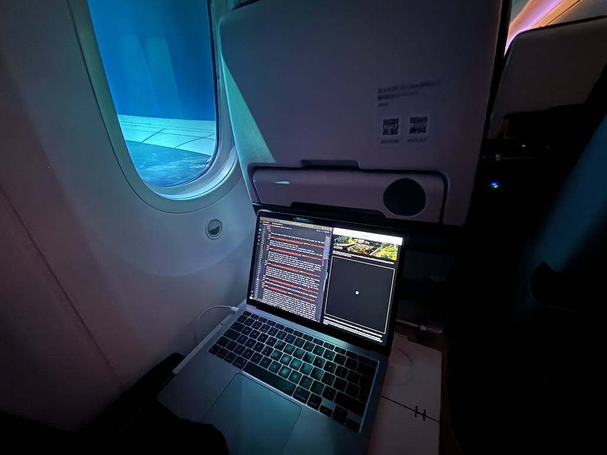
Looking back, of the things I planned to do in Hawaii I hadn't done a great job ticking them all off.
1. I wanted to see flowing lava as it's common on the big island, but as the volcanos were inactive during my visit this wasn't possible.
I don't mind this one so much as I didn't have any control over doing it.
2. I wanted to see a manta ray, but decided not to as I had to book a late night swim with one of the expensive companies.
This I don't particularly mind as it was a lot of money and didn't look very good in the first place.
Besides, the animal I wanted to see the most here was the sea turtle and I saw at least 10 on Hawai'i Island.
3. I imagined that I was going to go surfing at some point while I was in Hawaii.
Considered the birthplace of surfing, it feels like a must do for everyone that travels here.
I'm very much enjoying solo traveling, but I guess I only have a desire to surf with friends as a social activity.
Although I did see surfers every day, I just didn't want to do it more than walking a trail or taking a day tour.
I guess in my head I can surf at Croyde or Newquay in England, but I can't climb the Olomana peaks.
Some of you reading this may think I really missed out not surfing at Waikiki bay, a truly world famous surfing beach. But I can happily say I had a better time by myself doing the "old person stuff" such as reading plaques and learning the local history, or simply going walking. Nonetheless I hope one day I can return. It's a beautiful place.
Navigate home